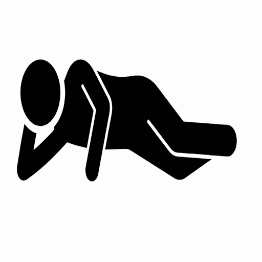
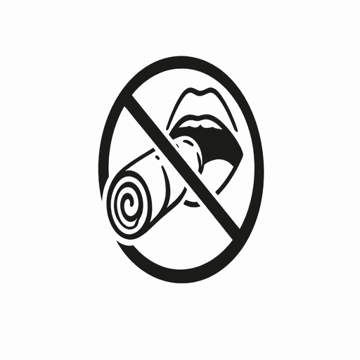
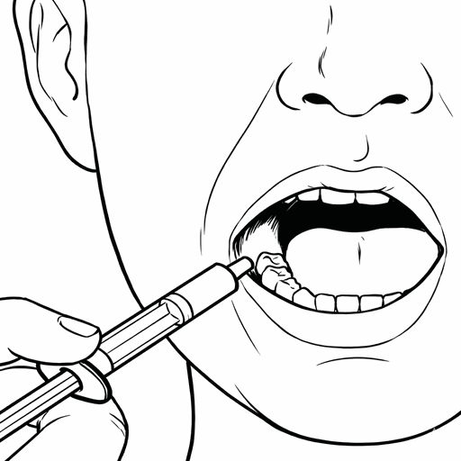

⚡ Pengurusan Sawan
Panduan langkah demi langkah untuk menguruskan episod sawan
Tindakan Segera
Semasa episod berlaku, kekal tenang. Catat waktu sawan bermula.

Pusingkan pesakit ke sisi (posisi pemulihan) untuk membantu pernafasan.
Amaran Keselamatan
Jangan sesekali memasukkan jari, sudu, atau sebarang objek ke dalam mulut.
Protokol Ubat
Berikan segera melalui picagari ke dalam pipi (buccal). Jika sawan berterusan, maklumkan pasukan penjagaan paliatif anda.
Jika sawan berterusan selepas 10 minit:
Jika sawan masih berterusan:
Panggil Ambulans Segera
Sentiasa rekod tempoh sawan, masa, dan dos yang diberikan. Maklumkan kepada doktor.

Protokol Pengurusan Sawan
Seizure Management Protocol
Tindakan Segera (Immediate Actions)
Semasa episod berlaku, kekal tenang. Catat waktu sawan bermula.
Pusingkan pesakit ke sisi (posisi pemulihan) untuk membantu pernafasan.
Amaran Keselamatan (Safety)
Jangan sesekali memasukkan jari, sudu, atau sebarang objek ke dalam mulut.
Protokol Ubat (Medication)
Midazolam 1ml(5mg) / Lorazepam 1mg. Berikan segera melalui picagari ke dalam pipi (buccal).
Jika sawan berterusan selepas 10 minit: Berikan Dos Ke-2.
Jika sawan masih berterusan: Berikan Dos Ke-3. PANGGIL AMBULANS SEGERA.
Sentiasa rekod tempoh sawan, masa, dan dos yang diberikan. Maklumkan doktor.